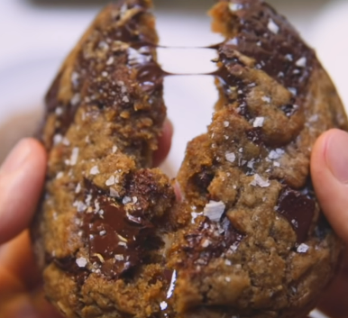

Chocolate Cookie - The Easy Way

Do you feel like having some chocolate cookies with with milk?
Please, follow these simple steps to become the master of Christimas!
Ingredients:
Toffe:
- 1 Stick Unsalted Butter
- 1 Cup Light Brown Sugar
- 1 Tsp kosher salt
Brown Butter:
- 2 Sticks Unsalted Butter
- 2 Ice Cubes
Dough:
- 1/2 Cup Sugar
- 1 1/2 Cups Dark Brown Sugar
- 2 Tsp Espresso Powder
- 2 Tsp Kosher Salt
- 1/2 Tsp Baking Sode
- 2 Eggs
- 2 Tsp Good Vanilla Extract
- 2 1/2 Cups All Purpose Flour
- 6 Oz Chocolate, 70% Cacao Minimum
- Maldon Sea Salt
Steps:
- Melt the unsultade butter
- Mix all ingredients for the Toffe till it's uniform
- Stir fry the the 2 sticks of unsalted butter with the ice cubes
- Mix all the ingridients for the dough till they're uniform
- Put the dough on the fridge for two hours
- Mix all ingredients in a bowl
- Put the mixture in a preheat oven at 180ºC